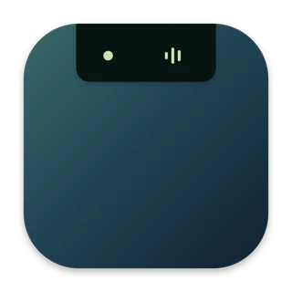

01 · Soft glitch
A brief split into muted teal and mint, followed by a quiet hold.
Compare the same Midnight icon with a restrained glitch, an outline morph, or a transition into the menu bar mark.

A brief split into muted teal and mint, followed by a quiet hold.
The app tile dissolves into a clean display-and-notch symbol.
The full app icon contracts into its compact monochrome mark.
Motion previews only. Reduce Motion shows a static icon. The app and menu bar icons remain unchanged.